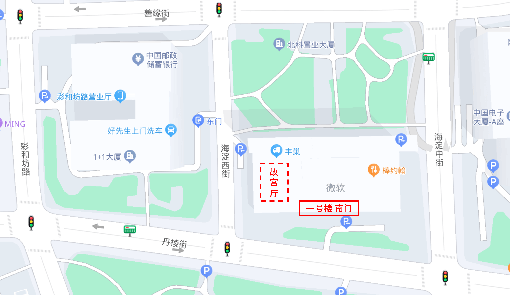

本次会议支持现场参会（北京）与远程参会（线上）。
This meeting is hybrid with the main in-person hub in Beijing, and remote attendees.
16号之后的参会申请可能无法取得参会通行证。
Registration after 16th may not get a meeting pass.
NOTE: Please register using your real name and bring your ID card to the meeting. At the meeting venue, security staff may check the attendee's ID card and meeting badge, to make sure the names are consistent.
注册成功后将于会前一周内收到参会确认邮件。远程接入信息将于会前两天单独发送至与会者注册时提供的邮箱地址。若未收到会议信息，请邮件联系 team-beihang-events@w3.org 获得协助。
Attendees will receive confirmation emails the week before the meeting. Remote participation information will be sent to the attedee's email address individually two days prior to the meeting. Please email to team-beihang-events@w3.org for further assistance.
会议免费面向 W3C 会员及受邀嘉宾开放。
This meeting is free and open to W3C Members and invited guests.
地址：微软亚太研究院故宫厅（北京市海淀区丹棱街5号）
Location：Gugong Room, Microsoft Reactor, No. 5 Dan Ling Street, Haidian District, Beijing, China.
会场指引：从微软一号楼南门进入故宫厅（参加以下指示图）：
